Wybierz grę lub program do uruchomienia:
DOS Zone — retro gry i programy MS-DOS oraz Amigi, uruchamiane online w Twojej przeglądarce. Bez instalacji i bez rejestracji: klikasz tytuł i grasz.
Działa na komputerze i na telefonie: na ekranie dotykowym dotyk to lewy przycisk myszy, a dłuższe przytrzymanie (~0,5 s) to prawy przycisk — m.in. do przesuwania okien.